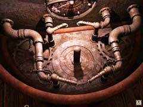
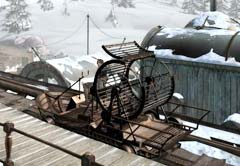

|

馬を動かすようにたのまれた、あなたはサーコスの酒場へ行き、馬を調べる。この中心の部分にハンスからもらった「歯車」をはめるのは、すぐに思いつくだろう。 その先である。歯車を回せば上のメーターが変化する。4つあるパイプは歯車の3つの穴にはめることができる。 正しい穴にパイプをはめることで、馬は動き出す。では、どの穴にパイプをはめるのか? そして、どのメーターで動かせばよいか?

機関車が勝手に進んでしまったので、あなたは後を追わねばならない。追いかけられそうなものは、この整備車のみである。 整備車は、あなたがまだ動かしていないレバーを引けば現れる。 しかし、整備車は完全に動かないだろう。整備車の後ろを見て欲しい。ネズミが入るあの車に似ている。つまり、ここに動物を入れればいいのだが、この町にはユーキーしかいない。 さらに困ったことに、ユーキーは眠っている。どうすれば起きて、あなたになついてくれるだろうか? 大佐の店にあったフィッシュキャンディーを使ってみるとよい。アザラシは魚も食べる。 あとはユーキーを整備車に連れて行けば大丈夫である。 |